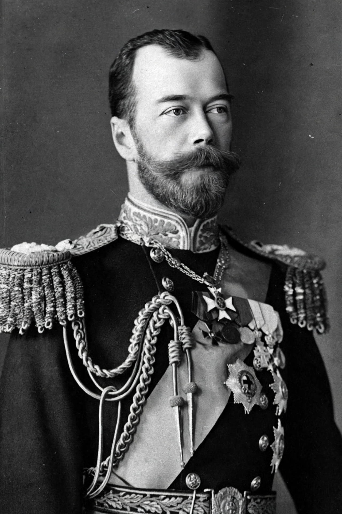

Nicholas II
Nicholas II (18 May [O.S. 6 May] 1868 – 17 July 1918), known in the Russian Orthodox Church as Saint Nicholas the Passion-Bearer, was the last Emperor of Russia, King of Congress Poland and Grand Duke of Finland, ruling from 1 November 1894 until his abdication on 15 March 1917. During his reign, Russia embarked on a period of industrialisation and political reform, but his failure to modernise its political structure led to its collapse during the First World War.
| Reign | 1 November 1894 – 15 March 1917 |
|---|---|
| Coronation | 26 May 1896 |
| Predecessor | Alexander III |
| Born | 18 May 1868, Tsarskoye Selo, Russian Empire |
| Died | 17 July 1918 (aged 50), Yekaterinburg, Russian SFSR |
| Spouse | Alexandra Feodorovna |
| House | Holstein-Gottorp-Romanov |

Reign
Nicholas succeeded his father Alexander III in 1894 and married Alexandra of Hesse the same year. His reign saw rapid industrial growth and the Trans-Siberian Railway, but also defeat in the Russo-Japanese War (1904–05) and the Revolution of 1905, which began with Bloody Sunday and forced him to issue the October Manifesto, creating the State Duma and promising civil liberties. His reliance on the mystic Grigori Rasputin, whose influence grew because of the tsarevich Alexei's haemophilia, badly damaged the monarchy's prestige.
When the First World War brought military defeats, food shortages and mass casualties, the February Revolution of 1917 forced Nicholas to abdicate on 15 March 1917, ending more than three centuries of Romanov rule. He and his family were held under house arrest by the Provisional Government and then the Bolsheviks, and on the night of 16–17 July 1918 they were executed in the Ipatiev House in Yekaterinburg.
Canonisation and legacy
The Russian Orthodox Church canonised Nicholas and his family as passion bearers in 2000. Their remains, identified by DNA testing, were reburied in St Peter and Paul Cathedral, St Petersburg, in 1998. Historians debate the extent to which his personal failings, rather than structural pressures, caused the collapse of the Russian Empire.
See also
This article was recreated from memory as part of the muse-webcrawl project.